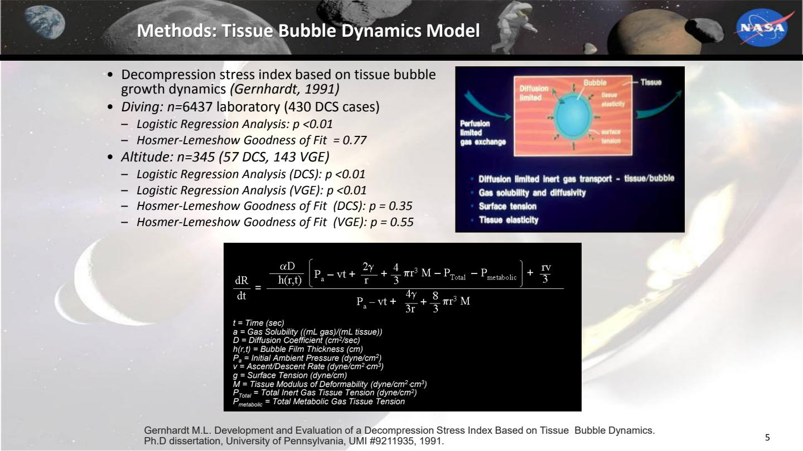

NASA model lab
Inspect the published model and edit the implemented BGI-to-probability equation independently of the existing calculator.
BGI probability equation
Supplemental NASA presentation, slide 12: b0 = −3.477; b1 = 0.0499. No mapping from the existing calculator’s tissue ratio or simulated health readings to BGI is assumed.
Uses the existing safe math parser. b0 must be −100…100, b1 > 0 and ≤ 10; BGI input is limited to 0…1,000 for debugging. These are software input bounds, not a validated physiological domain. Local storage key: kiwinaut-nasa-v1. No Python API changes.
Tissue-bubble equation from the supplied PDF
Slide 5 is preserved visually to avoid changing mathematical notation. It describes bubble-radius dynamics, followed by BGI and logistic regression. Read-only: it is not an executable equation in this build.

Missing for an executable model: calibrated physical constants and initial conditions; film-thickness function h(r,t); tissue gas kinetics and metabolic tensions; precise BGI definition/aggregation; pressure-transition integration rules. The slide alone does not supply these. Do not infer them by fitting four reported risks.
Open supplied NASAmodel.pdf · Implementation notes